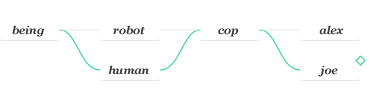
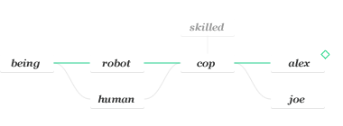

Crash course
Lets assume the following being, human, robot, cop and doc objects:
var being = {
is:'being'
}
var human = {
is:'human'
}
var robot = {
is:'robot'
}
var cop = {
is:'cop'
}
var doc = {
is:'doc'
}
If you have an alex object and add cop to its chain:
var alex = {};
alex.chain(cop);
You can now retrieve the is property like this:
alex.get('is'); >>> 'cop'
If you add an is property to alex you can then retrieve it with the get method, looking up the inheritance chain the way a normal property lookup would, returning the first property up the chain matching the specified name:
alex.is = 'alex';
alex.get('is'); >>> 'alex'
The raw method returns an array with all the properties that match the specified name found up the object's chain:
alex.raw('is'); >>> ['alex', 'cop']
Note that alex.get('is') returns the same value as alex.raw('is')[0]. You can also add more objects to alex's chain by using the chain method:
alex.chain(robot);
alex.raw('is'); >>> ['alex', 'cop', 'robot']
It can be useful to retrieve the last value up the chain. This can be achieved by doing:
alex.raw('is')[alex.raw('is').length-1]; >>> 'robot'
By now, alex's chain looks something like this:
If you add being to the chain you get:
alex.chain(being);
alex.raw('is'); >>> ['alex', 'cop', 'robot', 'being']
You get this:

You can create a similar structure with only one call to the chain method, since it accepts multiple arguments:
var joe = {
is:'joe'
}
joe.chain(cop, human, being);
joe.raw('is'); >>> ['joe', 'cop', 'human', 'being']
So now you have this:

Both joe and alex only inherit from the same cop and being objects. While changes to those objects will affect the values returned by joe and alex's get and raw methods, joe remains independent from robot and alex remains independent from human.
robot.laws = ['cause no harm', 'obey', 'protect self'];
alex.get('laws'); >>> ['cause no harm', 'obey', 'protect self']
joe.get('laws'); >>> undefined
It's important to know that these values are not being copied, they are being passed by reference. They are as live as they can be. Now let's consider the following:
being.think = function() {
return 'i am '+this.is;
}
alex.get('think')(); >>> 'i am being'
joe.get('think')(); >>> 'i am being'
It makes sense. The think method is returned normally and interprets this as a reference to the object it belongs to when called. Now, what if you want to reference the bottommost object in the chain, giving being's methods access to their properties? To do that you use get's second parameter that, if set to true, applies the methods to the object calling it even if the owner is up the chain.
alex.get('think', 1)(); >>> 'i am alex'
joe.get('think', 1)(); >>> 'i am joe'
Branching
If an object A inherits from an object B wich in turn has its own inheritance chain we say this chain is a branch of A's. The get and raw methods ignore B's chain when called upon A. Let's create a branch in the current chain:
var skilled = {
is:'skilled',
skill:'shooting'
}
cop.chain(skilled);

alex.get('skill'); >>> undefined
alex.raw('skill'); >>> [undefined, undefined, undefined, undefined]

The object cop now has its own chain wich creates a branch for alex's chain. As demonstrated, both get and raw ignore this branch that is cop's chain. You can include all branches in our lookups by using the methods getget and rawraw. These methods look up the entire chain tree:
alex.getget('skill'); >>> 'shooting'
alex.rawraw('skill'); >>> ['shooting', 'shooting', undefined, undefined]

This is of course also true for joe:
joe.getget('skill'); >>> 'shooting'
joe.rawraw('skill'); >>> ['shooting', 'shooting', undefined, undefined]

By being aware of the whole chain tree, the method rawraw always returns the inherited values of each object in the chain. In this case alex and joe inherit the skill property from cop, wich in turn inherits it from skilled. The property skill isn't found in being, robot nor human.
Priority is indicated by the numbers 1 through 4. Notice that younger chained objects's chains are considered younger than older chained objects. This means that if a property skill is found in cop, that value takes precedence and it will be the one inherited down the chain:
cop.skill = 'driving';
alex.getget('skill'); >>> 'driving'
alex.rawraw('skill'); >>> ['driving', 'driving', undefined, undefined]
Similarly, if the object skilled has a property laws its value will take precedence over robot's laws:
skilled.laws = 'kick ass';
alex.getget('laws'); >>> 'kick ass'
alex.rawraw('laws'); >>> ['kick ass', 'kick ass', ['cause no harm', 'obey', 'protect self'], undefined]
This means alex's getget will now return 'kick ass' instead of ['cause no harm', 'obey', 'protect self'] when looking for the laws property. The method rawraw, similarly to raw, will always return an array with the lenght being equal to the number of objects in its owner immediate chain (this includes the owner). Branches to the chain are ignored by both alex's get and raw, meaning in this case that skilled is only visible to getget and rawraw:
alex.get('skill'); >>> 'driving'
alex.raw('skill'); >>> [undefined, 'driving', undefined, undefined]
alex.get('laws'); >>> ['cause no harm', 'obey', 'protect self']
alex.raw('laws'); >>> [undefined, undefined, ['cause no harm', 'obey', 'protect self'], undefined]
For debugging purposes it's made available the property chainage wich is an array of references to every object in its owner's chain (not including itself):
alex.chainage; >>> [{...}, {...}, {...}]
These objects are cop, robot and being. This way you can also verify that cop only has skilled in its chain:
cop.chainage; >>> [{is:'skilled', laws:'kick ass', skill:'shooting'}]
Loops
chainchainchain allows for loops to be designed however they are not desirable due to the recursive nature of getget and rawraw. For this reason an Error is thrown if a loop is detected in the hierarchy chains and a Warning indicates wich object was found repeatedly up the chain:
being.chain(alex); xxx Error: loop in chain tree !!! 'Looping' {is:'being', think:function(){...}}
You can change this behaviour by setting Object.prototype.chain.allowloops to true. This way you are granted permission to design loops in your chains and you just get a Warning in case you run getget or rawraw, as by doing so you risk entering an infinite loop and crashing your program.
chain.allowloops = true;
alex.getget('think', 1)(); >>> 'i am alex' !!! 'Getget called while chain.allowloops is set to true.'
chainchainchain is chainable!
chainchainchain manipulation methods always return the object they're called on:
being.chain(skilled); >>> {is:'being', think:function(){...}}
Chaining allows you to run multiple Chain manipulation methods on the same element within a single statement:
alex.chain(skilled).dechain(cop, robot, being).inchain(human).is; >>> 'alex'
alex.raw('is'); >>> ['alex', 'human', 'skilled']
That's inchain.
Keep in mind that all of this is independent from the prototypical inheritance scheme, so you can use both tools at the same time to create truly intricate functionalities in your programs.